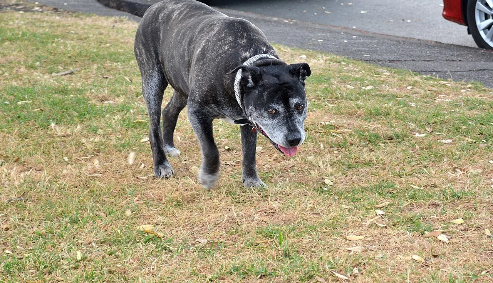
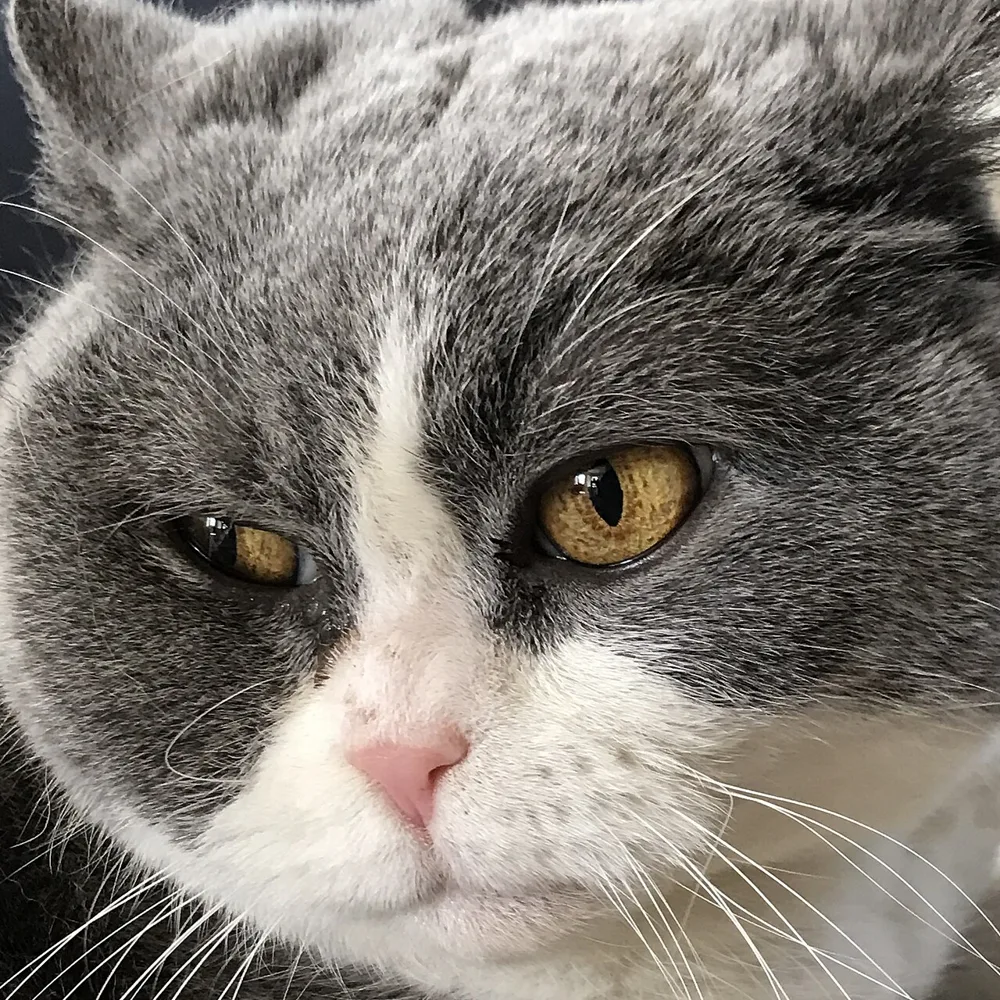

This week I started researching a topic that is close to home for a lot of people: pets getting old. Thanks to better food and veterinary care, many cats and dogs now live well into their teens. That sounds like only good news, but it also means more pets spend a long part of their lives as “seniors”, with slow changes that are easy to miss.

Change that is too slow to see
What surprised me most is how often owners simply do not notice. In a UK study, many dog owners described real clinical signs, such as stiffness, weight change or confusion, as “just old age”, so they did not see them as serious or treatable, and some never mentioned them to their vet (Wallis et al., 2023). The problem is not that people do not care. It is that ageing happens a little bit every day, and when you see someone every day, you stop seeing the change.

Cats make this even harder, because they hide pain very well. In one study of 100 cats, 61 had arthritis visible on X-rays, yet only 13 owners had noticed any limping (Slingerland et al., 2011). An earlier study found X-ray signs of joint disease in 90% of cats over 12 years old (Hardie, Roe and Martin, 2002). Instead of limping, an arthritic cat might just stop jumping onto the sofa, or groom less. Each of these is tiny on its own.
owner had noticed lameness (13)arthritis on X-ray, not noticed (48)no arthritis found (39)
The mind changes too. Canine cognitive dysfunction, a condition similar to early Alzheimer’s disease, is thought to affect around 14–35% of dogs over eight years old (Brisset et al., 2025), and it is still described as common but underdiagnosed (Haake et al., 2024). The early signs are things like sleeping more in the day, pacing at night or seeming “lost” in a familiar room. They are easy to explain away.
What I take from this
Reading this research, I realised the gap is not only medical, it is about attention. Vets see a pet for a few minutes a year. Owners see it every day, but too close to notice slow change. Most of the important information is already there, in small daily habits like how much a cat eats or how often a dog climbs the stairs, but nobody is really looking at it over time.
So this week I am leaving with questions rather than answers. What counts as a “normal” change in an old pet? How could small daily changes become easier to see without making owners anxious? And how do you design for an animal who cannot tell you how it feels?
Bibliography
- Brisset, A., Taylor, T. L., Blanchard, T., Fernandez, E. J. and Hazel, S. J. (2025) ‘Attitudes of Australian veterinary professionals to diagnosing and managing canine cognitive dysfunction’, Veterinary Sciences, 12(3), 272. Available at: https://www.mdpi.com/2306-7381/12/3/272 (Accessed: 2 October 2026).
- GPS 56 (2017) Old Dog [Photograph]. Wikimedia Commons. Licensed under CC BY 2.0; cropped. Available at: https://commons.wikimedia.org/wiki/File:Old_Dog_(31486159994).jpg (Accessed: 2 October 2026).
- Haake, J., Meller, S., Meyerhoff, N., Twele, F., Charalambous, M., Talbot, S. R. et al. (2024) ‘Comparing standard screening questionnaires of canine behavior for assessment of cognitive dysfunction’, Frontiers in Veterinary Science, 11, 1374511. Available at: https://www.frontiersin.org/articles/10.3389/fvets.2024.1374511 (Accessed: 2 October 2026).
- Hardie, E. M., Roe, S. C. and Martin, F. R. (2002) ‘Radiographic evidence of degenerative joint disease in geriatric cats: 100 cases (1994–1997)’, Journal of the American Veterinary Medical Association, 220(5), pp. 628–632.
- JexyAnN (2017) Gray and White Senior British shorthair [Photograph]. Wikimedia Commons. Licensed under CC BY-SA 4.0; cropped. Available at: https://commons.wikimedia.org/wiki/File:Gray_and_White_Senior_British_shorthair.jpg (Accessed: 2 October 2026).
- Slingerland, L. I., Hazewinkel, H. A. W., Meij, B. P., Picavet, P. and Voorhout, G. (2011) ‘Cross-sectional study of the prevalence and clinical features of osteoarthritis in 100 cats’, The Veterinary Journal, 187(3), pp. 304–309.
- Wallis, L. J., Radford, A. D., Belshaw, Z., Jackson, J., Kubinyi, E., German, A. J. and Westgarth, C. (2023) ‘“Just old age” – a qualitative investigation of owner and veterinary professional experiences of and attitudes to ageing in dogs in the UK’, Journal of Small Animal Practice. doi: 10.1111/jsap.13610.